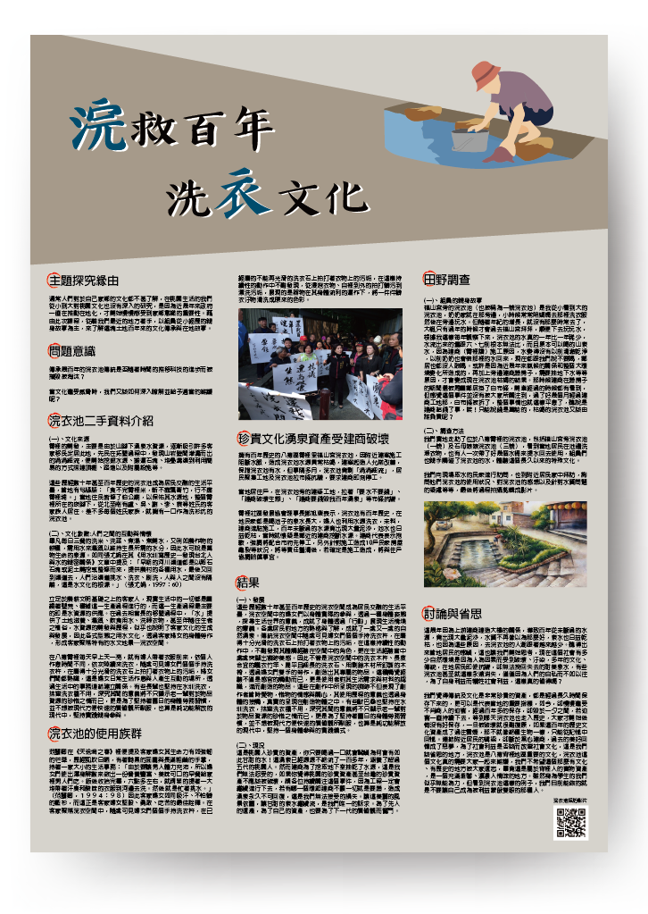

浣衣池
文化廊道競賽 - 獲得第三名
探究緣由
由於我從小到大就在浣衣池旁邊長大，但隨著年紀的增長，就沒有那麼時常去了，每年觀察下來，浣衣池的水量一年比一年稀少。但不希望這個那麼有文化歷史的地方被大家遺忘。因為這是屬於霄裡人的寶物資產，也是桃園的重要文化，非常值得我們去探究。

由於我從小到大就在浣衣池旁邊長大，但隨著年紀的增長，就沒有那麼時常去了，每年觀察下來，浣衣池的水量一年比一年稀少。但不希望這個那麼有文化歷史的地方被大家遺忘。因為這是屬於霄裡人的寶物資產，也是桃園的重要文化，非常值得我們去探究。